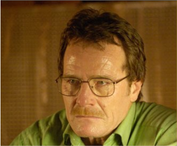
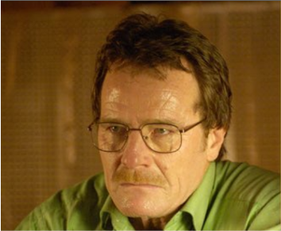
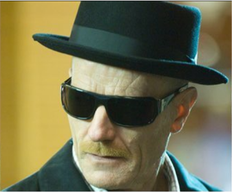

SAISON 1
Prise de conscience du cancer walter et sa famille ne peuvent pas se permettre de payer le traitement
Walter Hartwell White est le protagoniste principal de Breaking Bad. C'est un professeur de physique-chimie Walter White a étudié à l'université California Institute of Technology avec Elliott Schwartz dans le domaine de la cristallographie. Il a recu un prix nobel de chimie. Il est donc surqualifié pour son job de professeur. Il menait une vie exemplaire. Et puis une triste nouvelle arriva ...
Prise de conscience du cancer walter et sa famille ne peuvent pas se permettre de payer le traitement
Walter devient un créateur de métamphétamine et sombre dans le trafic.
Walter est devenu très doué et arrive a générer de très gros revenue.
Walter travail pour des gangs, mais son ego le pousse a voir plus grand. Il entame ca transformation vers un homme bien plus dangereux.
Walter est devenu sont propre chef il n'obéit a personne. Il se fait un nom dans le business de la vente de drogue en tuant Guss Freeks
Walter est démasqué et perd tout, sa femme, son fils,son coéquipier sa maison, son empire.
HeisenBerg est un pilier dans le milieu de la drogue. C'est un fabricant de méthamphétamine, il a accumulé une fortune de 80 Million de dollars. Il a mis fin au plus grand business de la série et a établi le sien a la place.